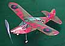
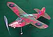

John Carlson's
Gloucester Auster
|  | Fellow Marin Aero Club flyer John Carlson has been enjoying this fine sport model. Below are his notes.
(click either image for a larger view) |
 |
|  | Fellow Marin Aero Club flyer John Carlson has been enjoying this fine sport model. Below are his notes.
(click either image for a larger view) |
|
Hi Thayer:
The 16" WS Gloucester Auster weighs 20g with a 12" loop of 3/32" rubber. With about 800 turns it will do about 30 sec when ROG'ing in the St. Vincent Gym without hitting the 22' trusses. The info below is drived from a recent email to the SAM 27 newsletter editor, to save retyping.
The Gloucester Auster was inspired by the July issue of FM Magazine. The cover illustration showed the model, and featured it in a construction article. The 16" span model was a sort of a tongue-in-cheek takeoff of the WW2 liaison/observation Auster aircraft built in England from a Taylorcraft design.
Also in the FM issue was an article showing methods of printing on Japanese tissue with a computer and printer. Using the Paint program in Windows 95, John generated a test panel of colored camouflage design and printed it on white tissue with his HP 672C printer. Color printing on the tissue was done using the Econofast setting to minimize the amount of ink deposited. Too much ink is more likely to result in smearing or color running. Also minimum ink sees to produce a more pleasing final effect. Satisfactory results seemed to be obtained by printing on either the shiny or dull sides of the tissue.
The printed test panels were cut into several pieces which were mounted on small balsa frames. Using these test samples, it was determined that shrinking with water or isopropyl alcohol, or the application of SIG thinner and nitrate dope did not cause the colors to run.
John then took the model plans and determined panel sizes for the various parts to be covered. The Paint program produces designs of 100 pixels per inch when printed. With the rectangle feature the various panels of appropriate sizes were blocked out with cutouts or appendages added to produce a panel slightly larger than the model section to be covered. At this point, lettering, insignia and other features can be added. The Auster had multicolored roundels which were generated with the circle feature. The camo design was freehanded with the "draw" feature. Appropriate colors were added to the several delineated areas with the "paint brush" feature.
Each panel was now printed in grayscale on 8 1/2 X 11 bond paper which served as a carrier and to locate the tissue to be printed. Grayscale was used so as to not waste colored ink. Tissue slightly larger than the individual panel sizes were fastened to the carriers with Scotch tape only at the leading edge entering the printer. There seemed to be a small amount of smearing in the printing for about an inch beyond the tape, apparently as a result of ink deposited on the non-porous tape. It might be better to adhere the tissue with an adhesive or to fold it over the leading edge of the carrier and tape it to the back side. Anyway the model was covered with the printed tissue using conventional techniques, shrunk with isopropyl alcohol and given one coat of well thinned nitrate dope.
John is pleased with the final result. Other inks and other printers may produce different results, so experimentation is recommended. Also there are better graphics programs than the Windows Paint program but John worked with what he had.
Copyright 1998, Thayer Syme. All rights reserved
{kind=link}